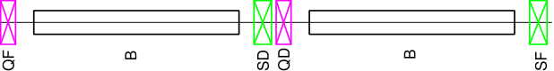
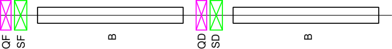
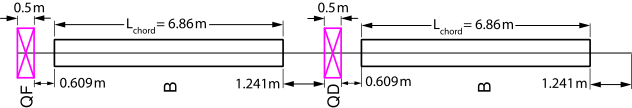

1. FODO Cells¶


Fig. 1 Forward arc FODO cell. QF, QD: focusing and defocusing quadrupoles. SF, SD: sextupoles near the focusing and defocusing quadrupoles.¶


Fig. 2 Reverse arc FODO cell.¶

Fig. 3 A sextant of the ring.¶
Introduction¶
In the arc FODO cells of the Electron Storage Ring (ESR), a sextupole, a bend, and a corrector coil all need to fit in between each pair of quadrupoles. To accommodate the sextupoles, the quadrupoles cannot be centered between the bends. As a result, there are two types of FODO cells in the ESR: one which has the sextupoles placed before the quadrupoles and one which has the sextupoles placed after the quadrupoles. We’ll call these the “forward” and “reverse” cells respectively, shown in the figures above. This tutorial will use the convention that all FODO cells start with a full-length horizontally focusing (\(K_1 > 0\)) quadrupole.
The ring is made up of 6 sextants, as discussed in Constructing the Ring. There are two types of sextants: forward sextants with forward FODO cells and reverse sextants with reverse FODO cells. The two types of sextants have mirror symmetry with respect to one another. Each sextant consists of two half-length straight sections with an arc section in between, as shown above.
The first straight section, in which the dispersion is zero, is followed by a dispersion “creator” to match to the periodic dispersion in the arc. After the arc, there is a dispersion “suppressor” to match to the dispersion-free second straight section.
Example: Forward Arc FODO Cell¶
The phase advance per FODO cell for the lattice to be designed is chosen to be 90° to achieve the emittance requirements. Construction of the forward arc FODO cell without sextupoles is demonstrated below. Later in the tutorial the sextupoles and corrector coils will be added in. Left as an exercise is the construction of the reverse arc FODO cell without sextupoles, along with the forward and reverse straight section FODO cells.


Fig. 4 Forward arc FODO cell with lengths specified.¶
The figure shows the lengths of each element in the forward arc FODO cell. The ESR uses
rectangular bends in the arcs. A rectangular bend has straight, parallel pole faces, and the
length given for it (\(L_\mathrm{chord}\) = 6.86 m) is the length of the straight line between the
centers of its pole faces. SciBmad has only sector bends (SBend), whose length L is the length
of the arc that the reference trajectory follows. A rectangular bend is a sector bend with the
edge angles e1 and e2 both half the bend angle \(\theta\), and with the arc length
\(L = L_\mathrm{chord}\,\theta / (2\sin(\theta/2))\).
Our collider ring will have 132 arc FODO cells, and so each bend must bend the orbit by an angle
of \(2\pi/(2 \cdot 132)\). Choosing initially arbitrary quadrupole strengths Kn1 (the normal
quadrupole strength \(K_1\), in 1/m²), the lattice for this cell is:
import numpy as np
import scibmad as sb
θ = np.pi/132 # Bend angle of the arc bends [rad]: 264 of them make 2π
Lc = 6.86 # Chord length of the arc bends [m]
with sb.elements():
qf = sb.Quadrupole(L=0.5, Kn1=0.4)
qd = sb.Quadrupole(L=0.5, Kn1=-0.4)
b = sb.SBend(L=Lc*θ/(2*np.sin(θ/2)), angle=θ, e1=θ/2, e2=θ/2) # Rectangular bend
d1 = sb.Drift(L=0.609)
d2 = sb.Drift(L=1.241)
fodoaf = [qf, d1, b, d2, qd, d1, b, d2] # Forward arc FODO cell
electron = sb.Species("electron")
pc_ref = 17.846262612447e9 # Reference momentum [eV/c]
cell_af = sb.Beamline(fodoaf, species_ref=electron, pc_ref=pc_ref)
cell_af
Beamline:
species_ref = electron
pc_ref = 1.7846262612447e10
Index Name Kind L [m] s [m] s_downstream [m]
1 qf Quadrupole 0.5 0.0f0 0.5
2 d1 Drift 0.609 0.5 1.109
3 b SBend 6.860161909351031 1.109 7.969161909351031
4 d2 Drift 1.241 7.969161909351031 9.210161909351031
5 qd Quadrupole 0.5 9.210161909351031 9.710161909351031
6 d1 Drift 0.609 9.710161909351031 10.319161909351031
7 b SBend 6.860161909351031 10.319161909351031 17.179323818702063
8 d2 Drift 1.241 17.179323818702063 18.420323818702062
The with sb.elements(): block names each element after its variable (qf.name
is "qf"). fodoaf is a
plain Python list of the elements in the order of the cell, and the
Beamline cell_af places
them along a reference trajectory for an electron with the reference momentum pc_ref. A
Beamline is what SciBmad analyzes and tracks through. The same element can be placed in many
beamlines and many times in one: changing a parameter of qf changes it everywhere it is placed.
For more details, see Defining a LatElement and
Defining a Beamline.
The periodic optics of the cell are computed with twiss:
tw = sb.twiss(cell_af)
tw
Twiss:
summ:
q1 = 0.359444785563771
q2 = 0.3597536991315494
etac = 0.000627421951546712
alphac = 0.0006274227714175842
df:
9×26 DataFrame
Row │ index name kind s beta1 phi1 dx x beta2 p ⋯
│ [m] [m] [2π] [m] [m] [m] [ ⋯
─────┼──────────────────────────────────────────────────────────────────────────────────────────────
1 │ 1 qf Quadrupole 0.0 43.8974 0.0 0.384121 0.0 2.38487 0 ⋯
2 │ 2 d1 Drift 0.5 43.8974 0.00178278 0.383709 0.0 2.38488 0
3 │ 3 b SBend 1.109 38.6861 0.00413489 0.359635 0.0 2.97825 0
4 │ 4 d2 Drift 7.96916 3.9665 0.0975364 0.170101 1.38778e-17 33.6911 0
5 │ 5 qd Quadrupole 9.21016 2.3903 0.163559 0.150579 1.38778e-17 43.958 0 ⋯
6 │ 6 d1 Drift 9.71016 2.3903 0.197669 0.150175 1.45775e-17 43.9581 0
7 │ 7 b SBend 10.3192 2.98364 0.234285 0.15876 1.62961e-17 38.7397 0
8 │ 8 d2 Drift 17.1793 33.6451 0.354304 0.33709 4.16334e-17 3.96185 0
9 │ -1 END --- 18.4203 43.8974 0.359445 0.384121 4.16334e-17 2.38487 0 ⋯
17 columns omitted
The output shows first the summary values for the cell. q1 and q2 are the phase advances
through the periodic cell, in units of 2π. The numbers 1 and 2 refer to the two transverse normal
modes, which are the horizontal and the vertical motion when there is no coupling, as here. (In
Bmad these are the modes a and b.) etac and alphac are the slip factor and the momentum
compaction. The table has one row per location: here the beginning of every element (each element
is integrated in one step) and the end of the cell. The columns are the position s, the beta
functions, the phase advances phi1 and phi2 (in units of 2π), the dispersion dx, and so on.
The columns are read at a location, which can be given by an element (placed once) or by its
index in the beamline (counted from 1, as in Julia). -1 is the end of the
beamline. For example, at the end of the cell:
tw.beta1[-1], tw.alpha1[-1], tw.dx[-1], tw.phi1[-1]
(43.89736698694267, -4.421086555611658, 0.3841212309718349, 0.359444785563771)
Several placements, or several elements, give a vector:
tw.beta1[[d1]] # At the beginning of both placements of d1
array([43.89736699, 2.39029577])
All the ways to give a location are described in Twiss. The whole table is
tw.df, a DataFrame, from which any columns can be
selected:
tw.df[:, ["name", "s", "beta1", "alpha1", "phi1", "dx"]]
| Row | name | s | beta1 | alpha1 | phi1 | dx |
|---|---|---|---|---|---|---|
| String | Float64 | Float64 | Float64 | Float64 | Float64 | |
| 1 | qf | 0.0 | 43.8974 | -4.42109 | 0.0 | 0.384121 |
| 2 | d1 | 0.5 | 43.8974 | 4.42109 | 0.00178278 | 0.383709 |
| 3 | b | 1.109 | 38.6861 | 4.13605 | 0.00413489 | 0.359635 |
| 4 | d2 | 7.96916 | 3.9665 | 0.925475 | 0.0975364 | 0.170101 |
| 5 | qd | 9.21016 | 2.3903 | 0.344629 | 0.163559 | 0.150579 |
| 6 | d1 | 9.71016 | 2.3903 | -0.344629 | 0.197669 | 0.150175 |
| 7 | b | 10.3192 | 2.98364 | -0.62967 | 0.234285 | 0.15876 |
| 8 | d2 | 17.1793 | 33.6451 | -3.84024 | 0.354304 | 0.33709 |
| 9 | END | 18.4203 | 43.8974 | -4.42109 | 0.359445 | 0.384121 |
To plot the optics, use a plotting package such as Matplotlib, with the columns as arrays:
from matplotlib.figure import Figure
fig = Figure(figsize=(7, 4.5), layout="constrained")
ax, ax2 = fig.subplots(2, 1)
ax.plot(tw.s, tw.beta1, label="β₁")
ax.plot(tw.s, tw.beta2, label="β₂")
ax.set_ylabel("β [m]")
ax.legend(loc="upper center")
ax2.plot(tw.s, tw.dx)
ax2.set_xlabel("s [m]")
ax2.set_ylabel("η [m]")
fig
<Figure size 700x450 with 2 Axes>
The curves are drawn through the rows of the table. With more integration steps per element
(b.n_steps = 10, see Tracking Methods), the table has more rows and the curves
follow the optics inside the elements.
Matching¶
Given our arbitrary choice of quadrupole strengths, the phase advance through our FODO cell is
not 90°. In order to determine which strengths produce the desired phase advance, the optimizer
of SciBmad, sb.match, can be used. It needs to know the targets (what should be
achieved) and the
knobs (what may be changed).
The targets are written with the quantities of twiss. A TwissExpr gives access to all of them
in the same way as the result of twiss does, but computes nothing until it is needed:
tw_af = sb.TwissExpr(cell_af)
tw_af
TwissExpr of a Beamline with 8 elements
tw_af.q1 is the horizontal phase advance through the cell (in units of 2π), and a target is
written with ==:
targets = [tw_af.q1 == 0.25, tw_af.q2 == 0.25]
targets
[Target: q1 == 0.25, Target: q2 == 0.25]
The knobs are the parameters to vary, given with sb.Knob. Here they are the
strengths Kn1 of
qf and qd:
vary = [sb.Knob(qf, "Kn1"), sb.Knob(qd, "Kn1")]
vary
[qf.Kn1, qd.Kn1]
Optimization involves the minimization of a merit function, which match evaluates
as
where the sum is over the targets, \(w_i\) are their weights (1 by default) and \(\delta D_i\) is the
difference of the value of target \(i\) from its goal. For tw_af.q1 == 0.25, this is the value of
tw_af.q1 (computed from the lattice) minus 0.25. A target counts as met when \(\delta D_i\) is within
its tolerance, 1e-8 by default. Weights and tolerances are set by writing a target as, e.g.,
sb.Target(tw_af.q1, 0.25, weight=10, tol=1e-10).
Weights can have a large effect on optimizations
when the targets cannot all be met. Often the best way to choose them is by trial and error: is
the optimization converging well or not?
Now the match is run:
sb.match(vary=vary, targets=targets)
Match converged (all targets met): 4 iterations, 5 evaluations, 1.07 s
Target value goal met
q1 0.25 == 0.25 yes
q2 0.25 == 0.25 yes
Knob before after lower upper
qf.Kn1 0.4 0.3128085745 -Inf Inf
qd.Kn1 -0.4 -0.3126434013 -Inf Inf
match reports whether the match converged, the value of each target and its goal,
and the
values of the knobs before and after. The knobs are now set to their new values:
qf.Kn1, qd.Kn1
(0.31280857446978005, -0.31264340129643536)
and the phase advances through the cell are 90°:
tw = sb.twiss(cell_af)
tw.q1, tw.q2
(0.250000000002662, 0.2500000000026622)
Most optimizers need the derivatives of the targets with respect to the knobs. Other codes, such
as Tao, compute them with finite differences, which are approximate, need a step size, and need
one more calculation for each knob. SciBmad computes the exact derivatives with respect to all
knobs at once, with automatic differentiation (see
Matching and Optimization). match takes Gauss-Newton steps (the
smallest
change of the knobs that meets the targets to first order), and shorter or damped steps where those
do not improve the match. It finds a nearby solution, and converges to a local optimum. For a global search, see
Using Other Optimizers.
There is no need to save the optimized lattice to a file: the strengths of qf and qd have
been changed, and every beamline in which they are placed now has them. In your lattice file,
keep the match call after the definitions. It runs each time the file is included,
so the file
records how the strengths were found.
Exercises¶
Reverse arc FODO: Construct the reverse arc FODO cell
fodoarwithout sextupoles, with the elements in the order of the figure of the reverse arc cell, and determine the quadrupole strengths for a 90° phase advance.Forward straight section FODO: Replace the bends in the forward cell by a drift (empty space) of length 5.855 m, named
db. This length is chosen to produce the same straight section length as in the RHIC tunnel. Additionally, use new horizontally focusing and defocusing quadrupolesqfssandqdss. Which quadrupole strengths lead to 90° phase advance in both planes? Name the linefodossf.Reverse straight section FODO: Replace the bends in the reverse cell by the drift
db, and use the quadrupolesqfssandqdss. Which quadrupole strengths lead to 90° phase advance in both planes? Name the linefodossr. These quadrupole strengths should be exactly the same as forfodossf.Analytical FODO cell: Take a FODO model with the same total length as constructed above, but with zero length quadrupoles and no bends. Calculate by hand the quadrupole strengths that lead to a 90° phase advance in \(x\) and \(y\). What are the beta functions at the thin quadrupoles? How do the quadrupole strengths and beta functions compare to above? (A thin quadrupole is a
Multipolewith an integrated strengthKn1L; you can check your answer withtwiss.)Forward and reverse cells: Check that your forward and reverse arc FODO cells, which both start with focusing quadrupoles, have different periodic beta and alpha functions. Check also that both cells, for the same phase advance of 90°, have exactly the same quadrupole strengths. Explain why this is so.
Arc and chord lengths: What is the difference between the arc length
Lof the bends and their chord length? Check with the geometry: the chord of an arc of length \(L\) and radius \(\rho = L/\theta\) is \(2\rho\sin(\theta/2)\). The curvature of the reference trajectory in a bend isb.g_ref(in 1/m).Finding elements: What do the following lines give? See Searching by Name.
cell_af["Quadrupole::*"] [ele.Kn1 for ele in cell_af["q*"]]
Targets and knobs: A target and a knob are objects of their own. Look at their documentation with
help(sb.Target)andhelp(sb.Knob), and find out how to give a knob lower and upper bounds.Fewer targets: Run the match with only the target
tw_af.q1 == 0.25, starting fromqf.Kn1 = 0.4andqd.Kn1 = -0.4again. Is the match successful? What is the vertical phase advance afterwards? With more knobs than targets, many solutions exist, andmatchreturns one near the starting point.
The solutions of exercises 1 to 3 are in the lattice file of this chapter,
lattices/ch01_fodo.py.